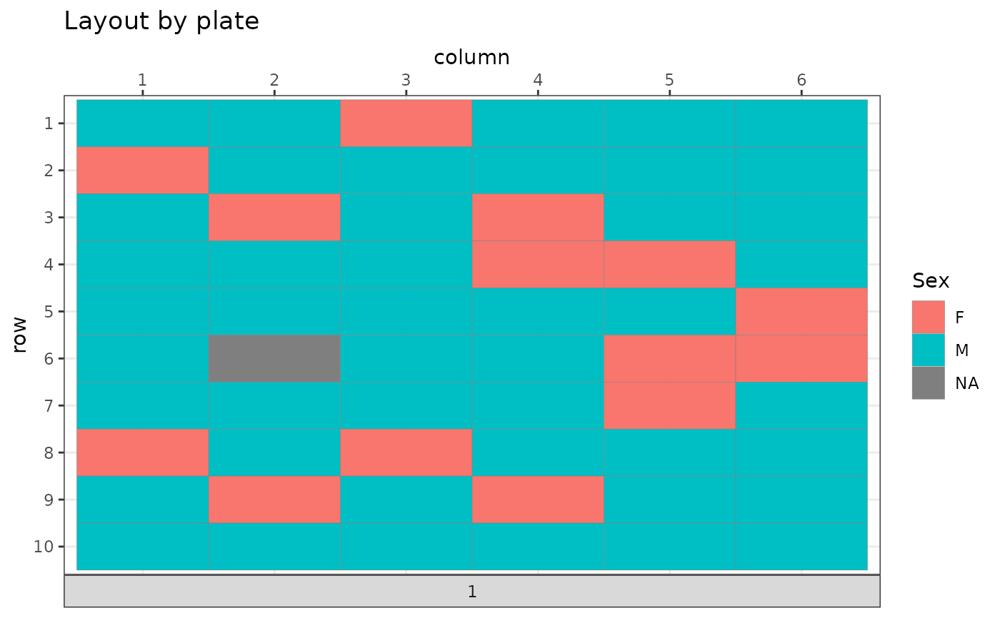

R/score_plates.R
mk_plate_scoring_functions.RdCreate a list of scoring functions (one per plate) that quantify the spatially homogeneous distribution of conditions across the plate
mk_plate_scoring_functions(
batch_container,
plate = NULL,
row,
column,
group,
p = 2,
penalize_lines = "soft"
)Batch container (bc) with all columns that denote plate related information
Name of the bc column that holds the plate identifier (may be missing or NULL in case just one plate is used)
Name of the bc column that holds the plate row number (integer values starting at 1)
Name of the bc column that holds the plate column number (integer values starting at 1)
Name of the bc column that denotes a group/condition that should be distributed on the plate
p parameter for minkowski type of distance metrics. Special cases: p=1 - Manhattan distance; p=2 - Euclidean distance
How to penalize samples of the same group in one row or column of the plate. Valid options are: 'none' - there is no penalty and the pure distance metric counts, 'soft' - penalty will depend on the well distance within the shared plate row or column, 'hard' - samples in the same row/column will score a zero distance
List of scoring functions, one per plate, that calculate a real valued measure for the quality of the group distribution (the lower the better).
data("invivo_study_samples")
bc <- BatchContainer$new(
dimensions = c("column" = 6, "row" = 10)
)
bc <- assign_random(bc, invivo_study_samples)
scoring_f <- mk_plate_scoring_functions(
bc,
row = "row", column = "column", group = "Sex"
)
bc <- optimize_design(bc, scoring = scoring_f, max_iter = 100)
#> Checking variances of 1-dim. score vector.
#> ... (0.15) - OK
#> Initial score: 9.413
#> Achieved score: 9.364 at iteration 5
#> Achieved score: 9.351 at iteration 7
#> Achieved score: 9.312 at iteration 15
#> Achieved score: 9.266 at iteration 37
#> Achieved score: 9.257 at iteration 38
#> Achieved score: 9.257 at iteration 42
#> Achieved score: 9.24 at iteration 47
#> Achieved score: 9.235 at iteration 83
plot_plate(bc$get_samples(), .col = Sex)
